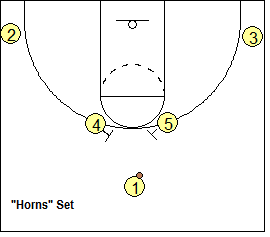
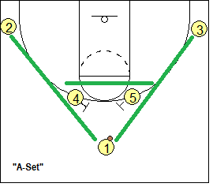

Basketbal is een sport die over heel de wereld gespeeld wordt.
Lees op deze site meer over basketbal.
Om met basketbal te starten heb je niet veel nodig, een bal en een basket is genoeg.
Vervolgens kan je met meer en meer mensen tegelijk spelen todat je met 10 bent, daarna wordt het te vol op het veld
Als je eenmaal genoeg mensen hebt(5 mensen in beide teams) kan je beginnen met spelletjes te spelen, een veelgespeeld spel is horns
 Het horns spel(ook A spel genoemd) is een spel waarbij er heel veel passlijnen open komen
Als er veel gepasst wordt moeten de verdedigers rond bewegen waardoor er gaten in de verdediging komen
Door deze gaten kan je naar de basket en kan je scoren. Dit is het doel van elk spel.
Er zijn heel veel verschillende competities
De competities dat als hoogste gezien wordt is de NBA, de nationale competitie van de VS
De NBA is een competitie waarbij de beste spelers van de wereld spelen
Naast de NBA staat de EuroLeague wat een gelijke competitie in Europa is(op een net wat lager niveau)
Er zijn ook competities voor jongeren, de FIBA U19 World Cup is een voorbeeld van een jongeren competitie
Hierna komen de landelijke niveaus
Een voorbeeld hiervan is de Nederlandse Eredivisie
In de Eredivisie kunnen alleen de grootste en beste clubs, de kleinere goede clubs spelen vaak 1e klasse of landelijk
Als laatste zijn er nog de regionale competities, deze zijn vaak voor de jeugd
HTML gecheckt met validator.w3.org
Accessibility gecheckt met wave.webaim.org
Privacy gecheckt door jealousdiver964